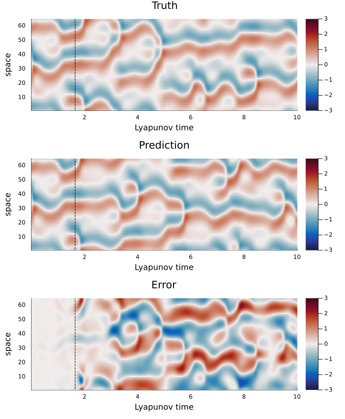

Parallel reservoirs for spatiotemporal signals
(Pathak et al., 2018) predicts the Kuramoto-Sivashinsky (KS) equation, a spatially extended chaotic PDE, by tiling the domain with many small, overlapping echo state networks instead of one huge one: each reservoir only ever sees a local patch of the domain (plus a little overlap from its neighbors). This example reproduces that architecture in ReservoirComputing.jl. To keep the build fast the reservoir/data sizes here are much smaller than the paper's (single machine, ~10s of seconds vs. their cluster run). The architecture is otherwise the same: local weighted input layers, sparse reservoirs, the quadratic readout trick from (Pathak et al., 2017) (NLAT1), and ridge regression.
Generating the data
The KS equation, $u_t = -u u_x - u_{xx} - u_{xxxx}$ on a periodic domain, has no closed-form solution, so training data comes from simulating it. Pathak et al. integrate it with the ETDRK4 exponential time-differencing scheme of Kassam and Trefethen; we do the same:
using ReservoirComputing
using LuxCore: setup, apply
using FFTW, Random, Statistics, Plots
function ks_etdrk4(u0::AbstractVector, d::Real, dt::Real, nstep::Integer)
n = length(u0)
k = (2π / d) .* vcat(0:(n ÷ 2 - 1), 0, (-n ÷ 2 + 1):-1)
L = k .^ 2 .- k .^ 4
E, E2 = exp.(dt .* L), exp.(dt .* L ./ 2)
M = 16
r = [exp(im * π * (j - 0.5) / M) for j in 1:M]
LR = dt .* L .* ones(1, M) .+ ones(n) * r'
Q = dt .* real.(vec(mean((exp.(LR ./ 2) .- 1) ./ LR, dims = 2)))
f1 = dt .* real.(vec(mean((-4 .- LR .+ exp.(LR) .* (4 .- 3LR .+ LR .^ 2)) ./ LR .^ 3, dims = 2)))
f2 = dt .* real.(vec(mean((2 .+ LR .+ exp.(LR) .* (-2 .+ LR)) ./ LR .^ 3, dims = 2)))
f3 = dt .* real.(vec(mean((-4 .- 3LR .- LR .^ 2 .+ exp.(LR) .* (4 .- LR)) ./ LR .^ 3, dims = 2)))
g = -0.5im .* k
nonlinear(w) = g .* fft(real(ifft(w)) .^ 2)
v = fft(u0)
uu = zeros(n, nstep + 1)
uu[:, 1] .= u0
for step in 1:nstep
Nv = nonlinear(v)
a = E2 .* v .+ Q .* Nv
Na = nonlinear(a)
b = E2 .* v .+ Q .* Na
Nb = nonlinear(b)
c = E2 .* a .+ Q .* (2 .* Nb .- Nv)
Nc = nonlinear(c)
v = E .* v .+ Nv .* f1 .+ 2 .* (Na .+ Nb) .* f2 .+ Nc .* f3
v = fft(real.(ifft(v))) # re-project onto real-valued fields each step:
# FFT round-off slowly breaks the Hermitian symmetry that `ifft` assumes,
# which is otherwise amplified by the stiff high-wavenumber modes over
# tens of thousands of steps.
uu[:, step + 1] .= real.(ifft(v))
end
return uu
endks_etdrk4 (generic function with 1 method)Same domain and time step as the paper's own single-reservoir KS demo:
Random.seed!(42)
N, d, dt = 64, 22.0, 0.25
u0 = 0.6 .* (-1 .+ 2 .* rand(N))
train_length, discard, sync_length, predict_length = 20_000, 500, 32, 800
uu = ks_etdrk4(u0, d, dt, discard + train_length + sync_length + predict_length)
data = Float32.(0.5 .* uu) # sigma = 0.5, matches the paper's input scaling
size(data)(64, 21333)Local, overlapping reservoirs
Split the N spatial points into G contiguous chunks. Each chunk gets its own reservoir, whose input window is its chunk plus locality points wrapped in from each neighbor. The overlap is what lets a purely local model still capture the (finite-speed) spatial coupling of the PDE.
G, locality = 4, 4
chunk_size = N ÷ G
nin = chunk_size + 2locality
res_size = 21 * nin # a whole multiple of nin, close to the paper's node count
function group_window(g)
chunk_begin, chunk_end = (g - 1) * chunk_size + 1, g * chunk_size
rear = mod1.((chunk_begin - locality):(chunk_begin - 1), N)
fwd = mod1.((chunk_end + 1):(chunk_end + locality), N)
return vcat(rear, chunk_begin:chunk_end, fwd), chunk_begin:chunk_end
endgroup_window (generic function with 1 method)Each local model is a plain ESNCell with a weighted_init input layer (so each spatial input only feeds a private block of reservoir nodes, as in the paper) and the NLAT1 quadratic state transform before the readout.
function local_model(rng)
return ReservoirChain(
StatefulLayer(ESNCell(nin => res_size;
init_reservoir = rand_sparse(; radius = 0.6, sparsity = 3 / res_size),
init_input = weighted_init(; scaling = 0.5))),
NLAT1(),
LinearReadout(res_size => chunk_size)
)
endlocal_model (generic function with 1 method)Training
Each reservoir is trained independently: its input is the windowed (own + overlap) data, its target is its own chunk one step ahead.
rng = MersenneTwister(17)
models, pss, sts, own_idx = Vector{Any}(undef, G), Vector{Any}(undef, G),
Vector{Any}(undef, G), Vector{UnitRange{Int}}(undef, G)
for g in 1:G
window_idx, own = group_window(g)
own_idx[g] = own
models[g] = local_model(rng)
ps, st = setup(rng, models[g])
train_in = data[window_idx, 1:(discard + train_length)]
train_target = data[own, 2:(discard + train_length + 1)]
pss[g], sts[g] = train(models[g], train_in, train_target, ps, st;
objective = RidgeRegression(1.0f-4), washout = discard)
endSynchronizing and predicting in parallel
To start an autonomous forecast, every local reservoir first needs to synchronize its internal state to the true, windowed trajectory (teacher forcing). After that, prediction runs in lock step: at each step every group calls apply on its own last prediction plus its neighbors' last predictions, exactly mirroring the overlap it was trained on.
sync_start = discard + train_length
for g in 1:G
window_idx, _ = group_window(g)
for i in 1:sync_length
_, sts[g] = apply(models[g], data[window_idx, sync_start + i], pss[g], sts[g])
end
end
pred_start = sync_start + sync_length
last_out = [data[own_idx[g], pred_start] for g in 1:G]
predicted = zeros(Float32, N, predict_length)
for step in 1:predict_length
new_out = Vector{Vector{Float32}}(undef, G)
for g in 1:G
rear = last_out[mod1(g - 1, G)][(end - locality + 1):end]
fwd = last_out[mod1(g + 1, G)][1:locality]
y, sts[g] = apply(models[g], vcat(rear, last_out[g], fwd), pss[g], sts[g])
new_out[g] = vec(y)
end
predicted[:, step] .= reduce(vcat, new_out)
global last_out = new_out
endResults
The paper reports prediction horizons of a handful of Lyapunov times before the chaotic divergence takes over; lambda_max = 0.05 below is their reported value for this domain size ($d=22$).
truth = data[:, (pred_start + 1):(pred_start + predict_length)]
lambda_max = 0.05
lyap_time = (1:predict_length) .* dt .* lambda_max
rmse = vec(sqrt.(mean((predicted .- truth) .^ 2, dims = 1)))
valid_time = lyap_time[findfirst(>(0.4std(truth)), rmse)]
hm(field, title) = heatmap(lyap_time, 1:N, field;
title, clims = (-3, 3), color = :balance, colorbar = false)
p1, p2, p3 = hm(truth, "Truth"), hm(predicted, "Prediction"),
hm(predicted .- truth, "Error")
vline!.((p1, p2, p3), Ref([valid_time]); color = :black, linestyle = :dash, label = false)
plot(p1, p2, p3; layout = (3, 1), xlabel = "Lyapunov time", ylabel = "space",
colorbar = true, size = (700, 850), left_margin = 3Plots.mm)
The dashed line marks where the space-averaged RMSE first crosses 40% of the field's standard deviation, a common "valid prediction time" cutoff in this literature. Up to that point the parallel reservoir tracks the true field closely; afterwards the chaotic dynamics amplify the small initial errors until prediction and truth fully decorrelate, the qualitative result reported in the paper (they report about eight Lyapunov times at their full scale), achieved here with several small, purely local models instead of one reservoir that has to see the whole domain at once.